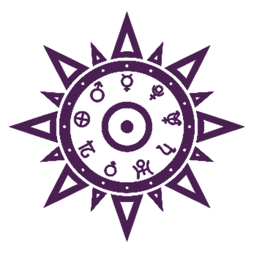

കേരള അസ്ട്രോ ഗൈഡ്
ജ്യോതിഷനോട് മലയാളത്തിൽ സംസാരിക്കാം
Free Kerala astrology: talk to an astrologer, see your horoscope, match stars.
ജ്യോതിഷി · Call
ജാതകം
പൊരുത്തം
ശി
ഗു
ച
ല ര
ബു
ശു
കു
മ
സ
astro.flowsxr.com